Q6. Self-deportation (paid and unpaid) X post: "1.9M+ illegal aliens have self-deported" (DHS graphic). @DHSgov (U.S. Department of Homeland Security) on X | Date: 2025-12-31. DHS claim of self-deportations since Jan 2025. Press graphic; DHS has published no method or table behind the 1.9M figure (later 2.2M)Source: https://x.com/DHSgov/status/2006459327394230292 https://pbs.twimg.com/media/G9hgHztXUAArYSC.jpg 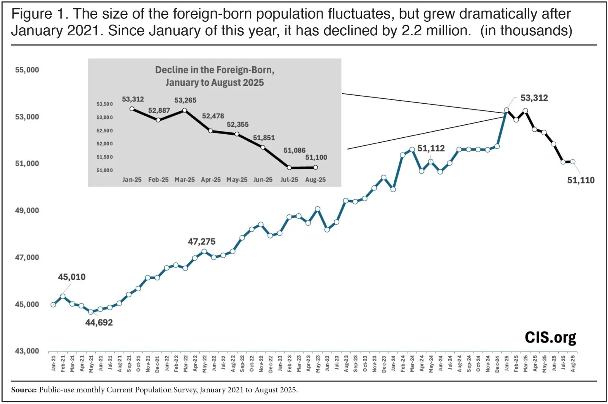
X post: DHS reposts the CIS chart, "foreign-born population decreased by 2.2 million". @DHSgov (U.S. Department of Homeland Security) on X | Date: 2025-10-09. Total foreign-born population (legal and illegal), CPS monthly, Jan 2021-Aug 2025. CIS chart of CPS survey data reposted by DHS; a net population change, not a count of departuresSource: https://x.com/DHSgov/status/1976283380468924695 https://pbs.twimg.com/media/G20rQr4WgAAjesS.jpg 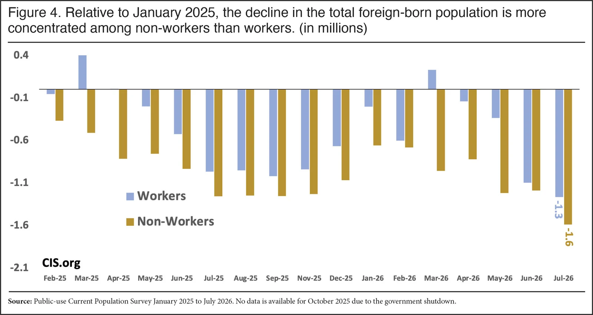
Decline in the foreign-born since Jan 2025: workers vs non-workers. Center for Immigration Studies (CIS), Camarota and Zeigler | Date: 2026-09-03. Change in foreign-born workers and non-workers relative to Jan 2025, CPS. CPS survey: foreign-born down 2.9M Jan 2025-Jul 2026, 44% of it workers; margin of error about +/-1.0MSource: https://cis.org/Report/Census-Bureau-Survey-Shows-Total-ForeignBorn-Down-29-Million https://www.cis.org/sites/default/files/2026-09/camarota-imm-pop-f4_0.jpg 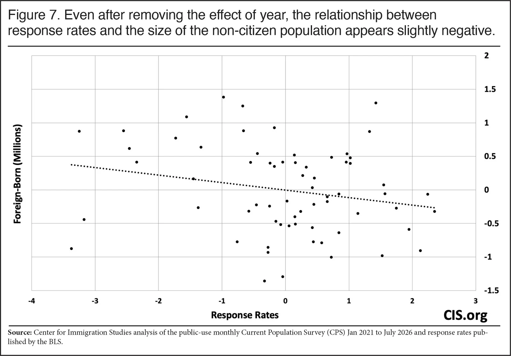
CPS response rates vs size of the non-citizen population (residuals). Center for Immigration Studies (CIS), Camarota and Zeigler | Date: 2026-09-03. Relationship between monthly CPS response rate and foreign-born count, year effects removed. CIS's test of the critics' nonresponse explanation; finds no positive relationshipSource: https://cis.org/Report/Census-Bureau-Survey-Shows-Total-ForeignBorn-Down-29-Million https://www.cis.org/sites/default/files/2026-09/camarota-imm-pop-f7.jpg 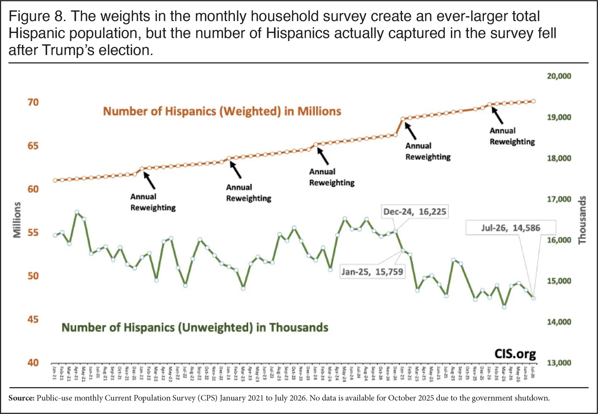
Hispanic population in the CPS: weighted vs unweighted respondents. Center for Immigration Studies (CIS), Camarota and Zeigler | Date: 2026-09-03. Weighted Hispanic total (a survey control) vs number of Hispanic respondents. Unweighted Hispanic respondents fell 7.4% Jan 2025-Jul 2026; consistent with departures or with nonresponseSource: https://cis.org/Report/Census-Bureau-Survey-Shows-Total-ForeignBorn-Down-29-Million https://www.cis.org/sites/default/files/2026-09/camarota-imm-pop-f8.jpg 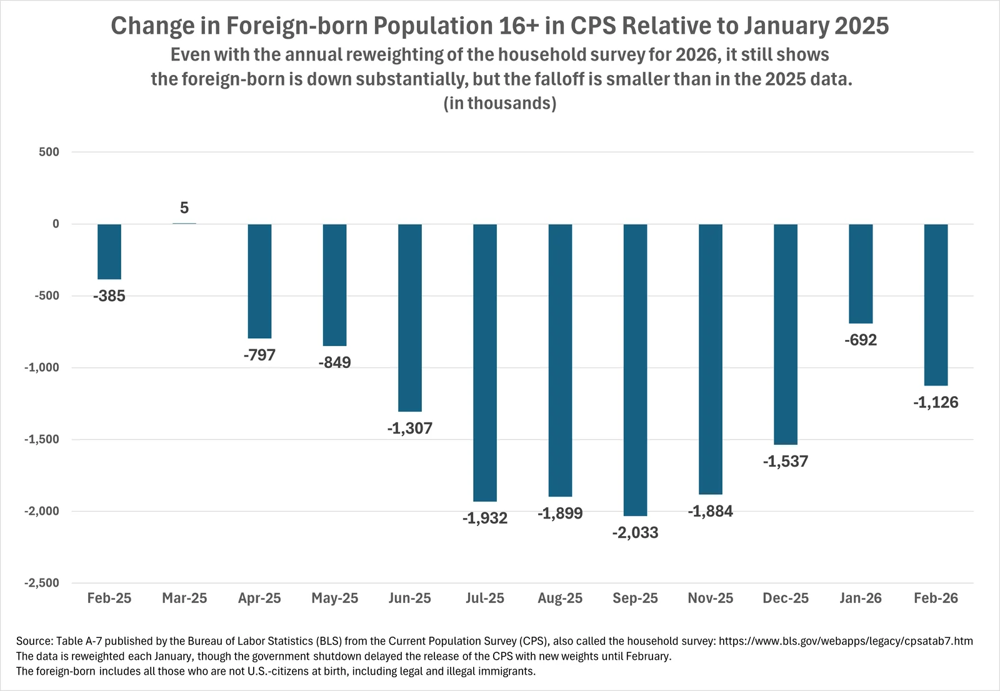
Change in foreign-born 16+ in the CPS relative to Jan 2025, after the 2026 reweighting. Center for Immigration Studies (CIS), Camarota | Date: 2026-03-06. Monthly change in foreign-born population 16+ vs Jan 2025, BLS Table A-7. With new 2026 population weights the decline shrank to 1.1M by Feb 2026 (vs 2.0M in Sep 2025 on old weights)Source: https://cis.org/Camarota/Immigrant-Population-Down-Maybe-Less-We-Thought https://cis.org/sites/default/files/2026-03/CPS-3-6-26B.png 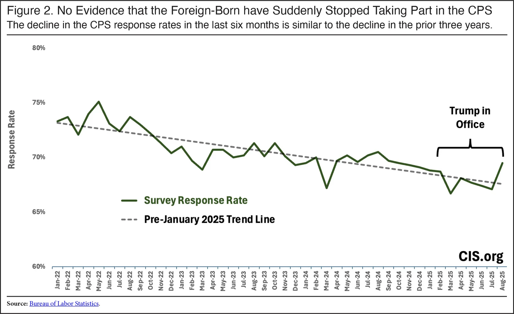
"No evidence the foreign-born have suddenly stopped taking part in the CPS": response rate trend. Center for Immigration Studies (CIS) | Date: 2025-10. CPS household response rate vs pre-2025 trend line. CIS rebuttal to critics who say lower immigrant response explains the dropSource: https://cis.org/Report/Why-Decline-ForeignBorn-Monthly-Household-Survey-2025-Very-Likely-Real https://www.cis.org/sites/default/files/2025-10/pop-oct-f2.jpg 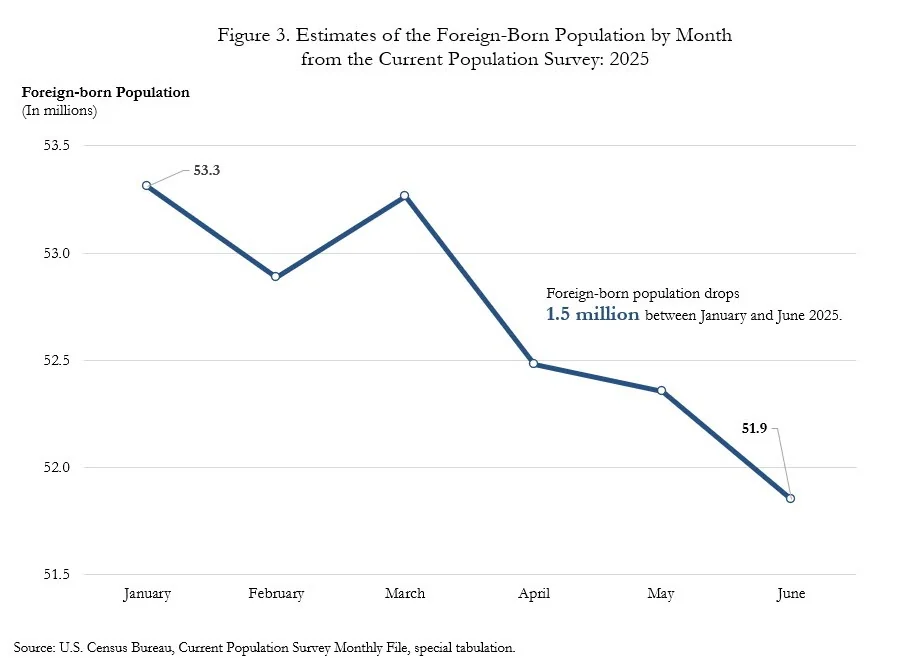
Foreign-born population by month from the CPS, Jan-Jun 2025. U.S. Census Bureau (Random Samplings blog) | Date: 2026-01-27. Foreign-born population, CPS special tabulation. Census: foreign-born population dropped 1.5M between Jan and Jun 2025 (53.3M to 51.9M)Source: https://www.census.gov/newsroom/blogs/random-samplings/2026/01/historic-decline-in-net-international-migration.html https://www.census.gov/content/dam/Census/newsroom/blogs/2026/historic-decline-in-net-international-migration/historic-decline-in-net-international-migration-figure-3.jpg 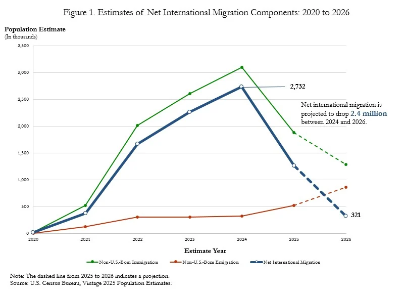
Net international migration components, 2020-2026 (Vintage 2025). U.S. Census Bureau (Random Samplings blog) | Date: 2026-01-27. Immigration, emigration and net international migration, Jul-Jun years. NIM 2.7M (2024) to 1.3M (2025); projected 321,000 for 2026; emigration risingSource: https://www.census.gov/newsroom/blogs/random-samplings/2026/01/historic-decline-in-net-international-migration.html https://www.census.gov/newsroom/blogs/random-samplings/2026/01/historic-decline-in-net-international-migration/_jcr_content/root/responsivegrid/responsivegrid/imagecore.coreimg.jpeg/1769522786251/historic-decline-in-net-international-migration-figure-1.jpeg 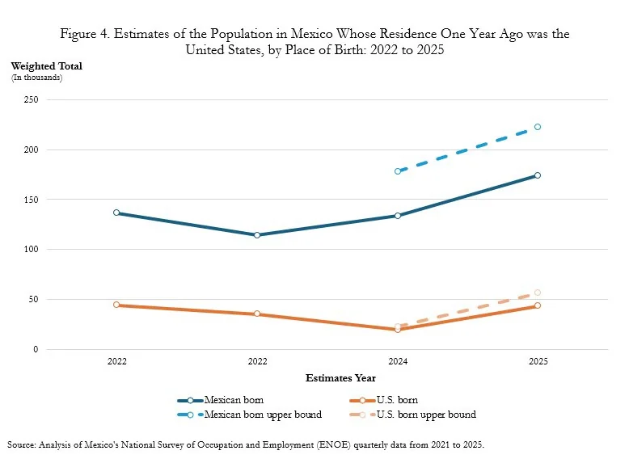
People in Mexico who lived in the U.S. one year earlier, 2022-2025. U.S. Census Bureau (analysis of Mexico ENOE survey) | Date: 2026-01-27. Weighted count of Mexico residents (Mexican-born and U.S.-born) who lived in the U.S. a year earlier. Return migration to Mexico measured from the Mexican side; one of the few direct emigration signalsSource: https://www.census.gov/newsroom/blogs/random-samplings/2026/01/historic-decline-in-net-international-migration.html https://www.census.gov/content/dam/Census/newsroom/blogs/2026/historic-decline-in-net-international-migration/historic-decline-in-net-international-migration-figure-4.jpg 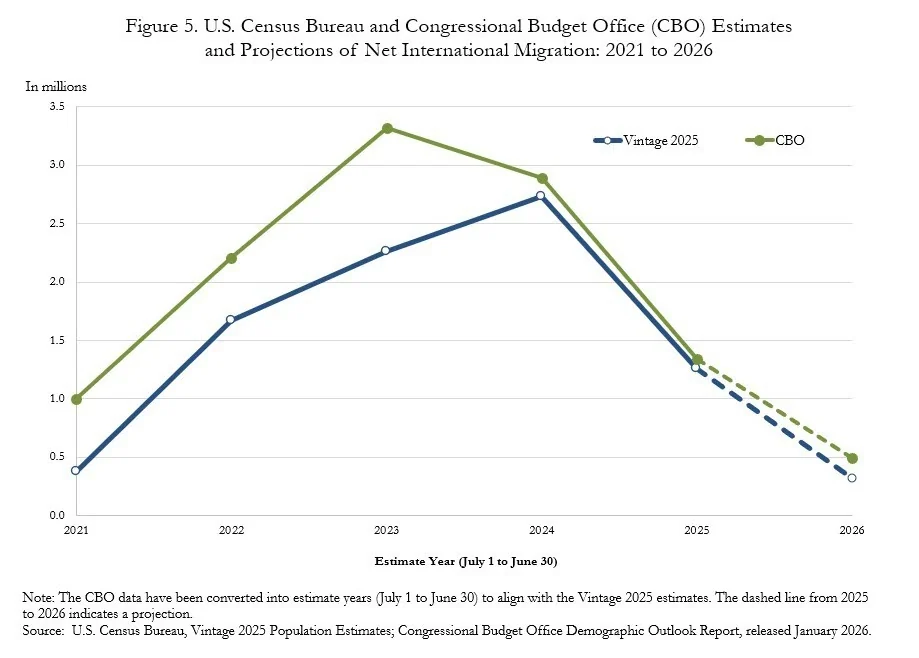
Census vs CBO net international migration, 2021-2026. U.S. Census Bureau | Date: 2026-01-27. Net international migration estimates and projections, Census Vintage 2025 vs CBO (Jan 2026). Both agencies show net migration still positive in 2025-26, unlike the CPS-based negative estimatesSource: https://www.census.gov/newsroom/blogs/random-samplings/2026/01/historic-decline-in-net-international-migration.html https://www.census.gov/content/dam/Census/newsroom/blogs/2026/historic-decline-in-net-international-migration/historic-decline-in-net-international-migration-figure-5.jpg 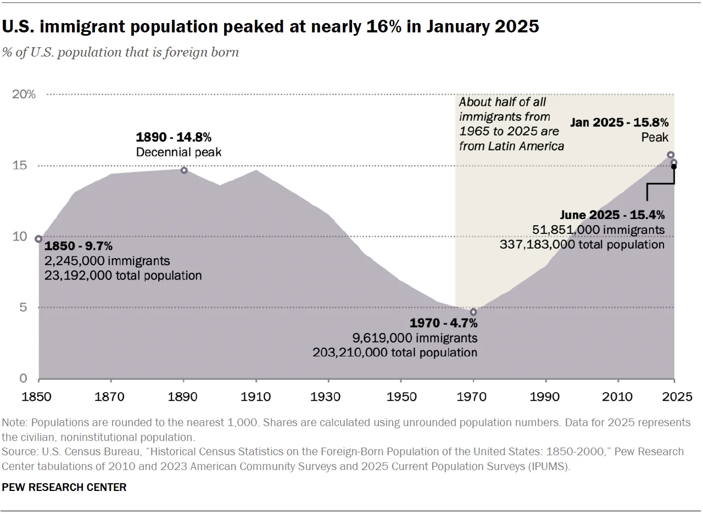
U.S. immigrant population peaked at nearly 16% in January 2025. Pew Research Center | Date: 2025-08-21. Foreign-born share of U.S. population, 1850-June 2025. Peak 15.8% (Jan 2025) to 15.4% (Jun 2025), 51.85M immigrants; 2025 points from the CPSSource: https://www.pewresearch.org/short-reads/2025/08/21/key-findings-about-us-immigrants/ https://www.pewresearch.org/wp-content/uploads/sites/20/2025/08/SR_25.08.21_immigrants-in-the-us_1.png 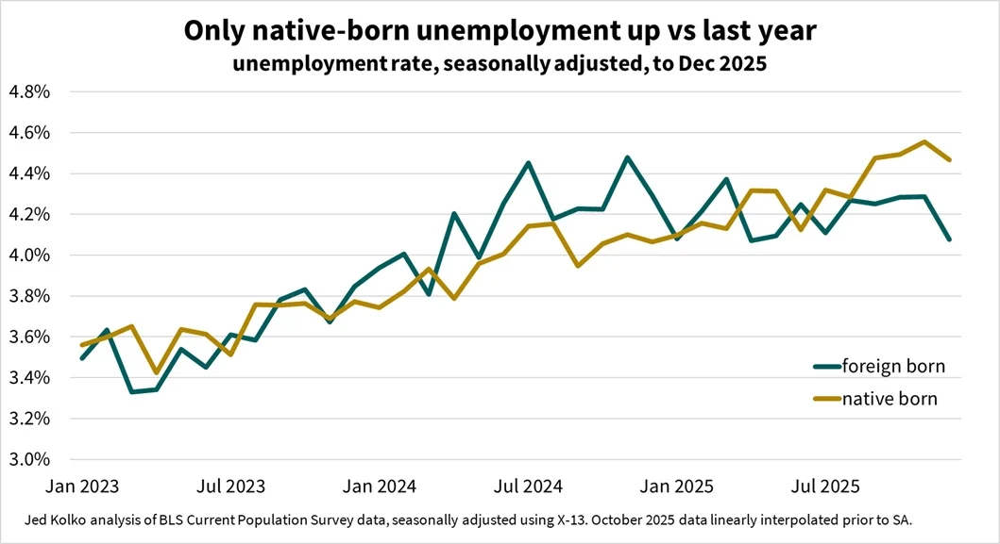
X post: "Only native-born unemployment up vs last year". @JedKolko (Jed Kolko, PIIE; former Biden Commerce under secretary) on X | Date: 2026-01-09. Unemployment rate, native-born vs foreign-born, CPS, seasonally adjusted to Dec 2025. Labor-market test of the mass-exodus claim: a large worker exodus should have tightened the native-born labor marketSource: https://x.com/JedKolko/status/2009624997598470317 https://pbs.twimg.com/media/G-Oel-sWkAAKvXE.jpg